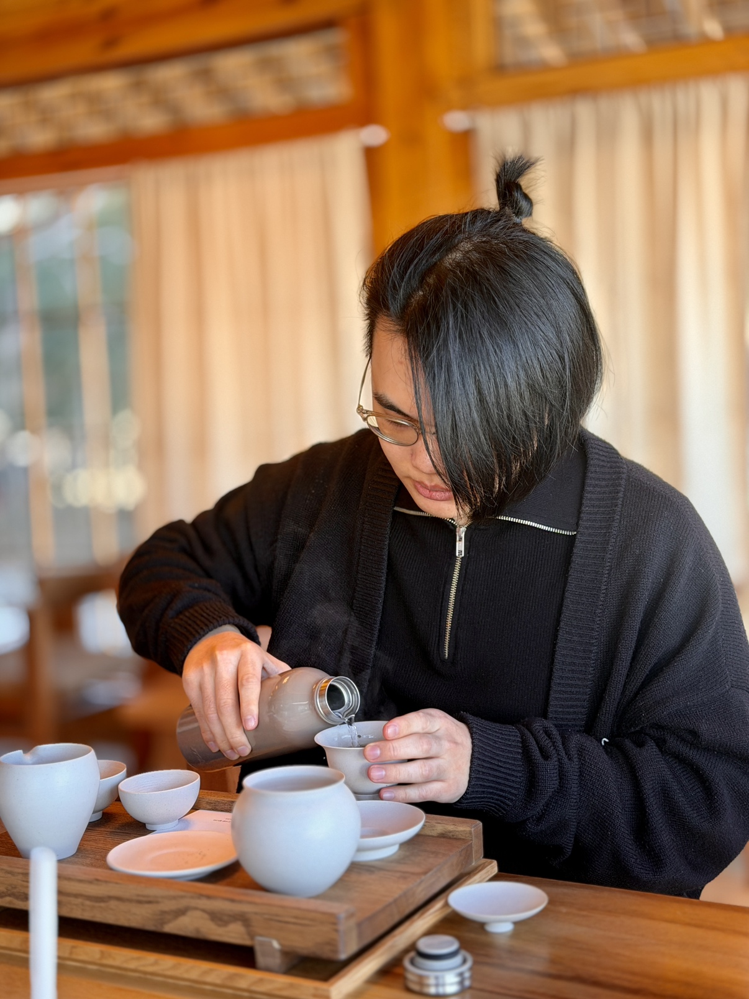
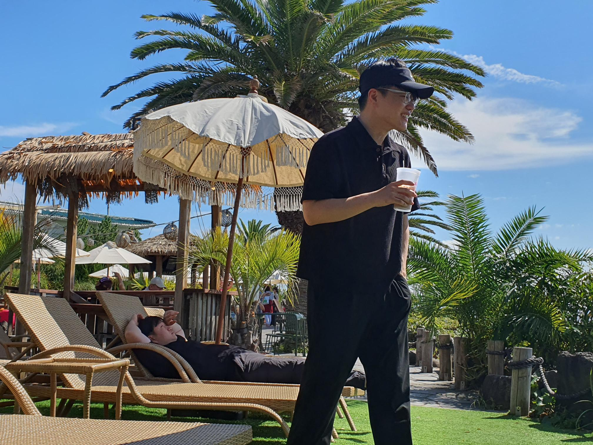
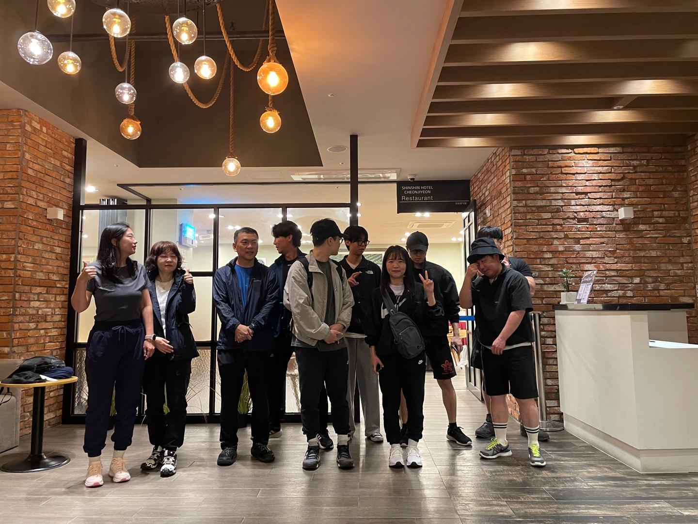
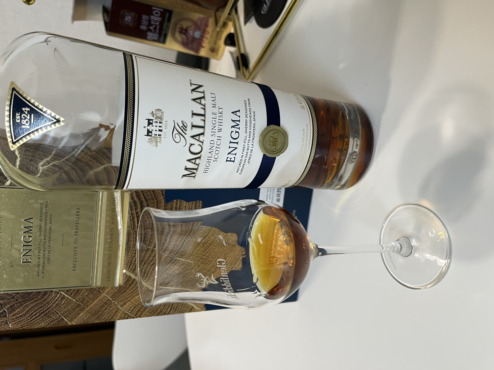
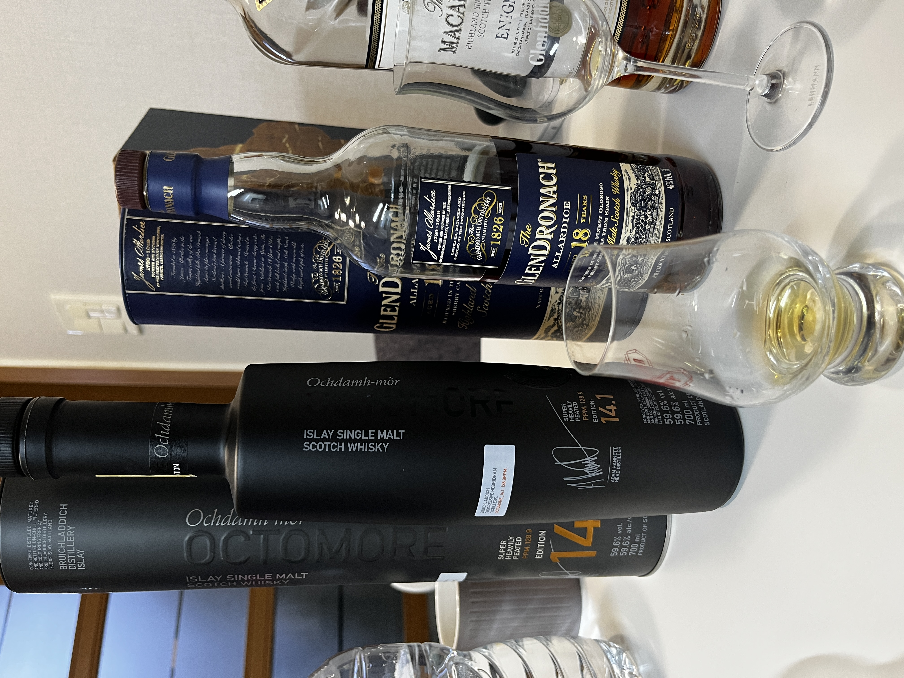
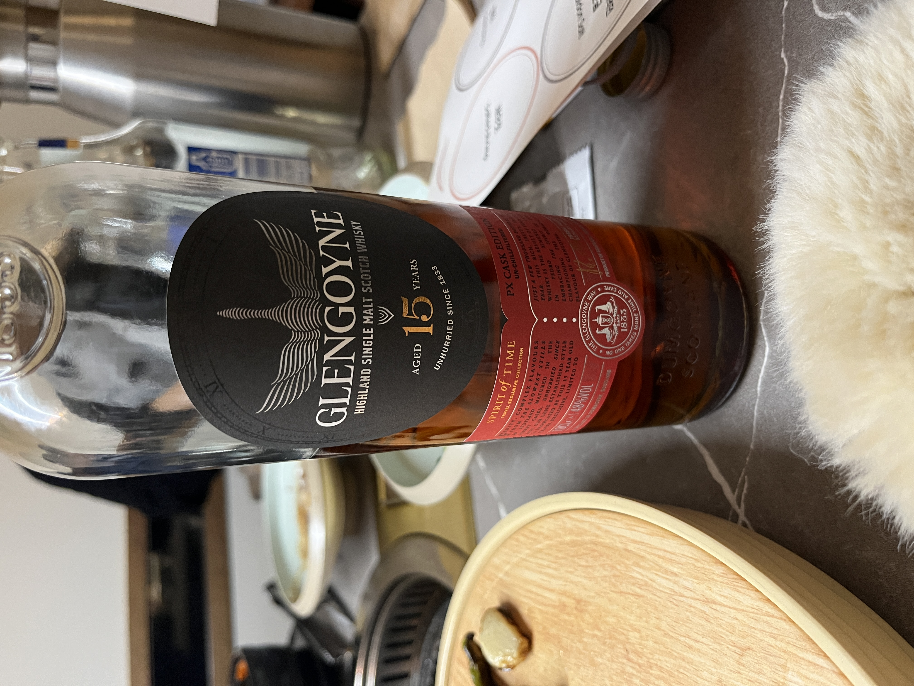
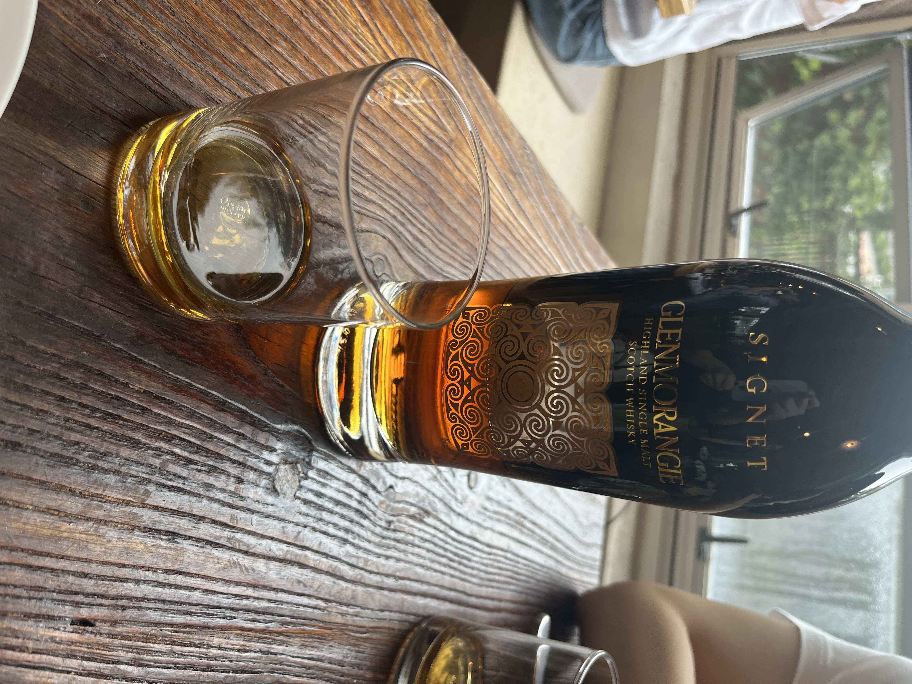
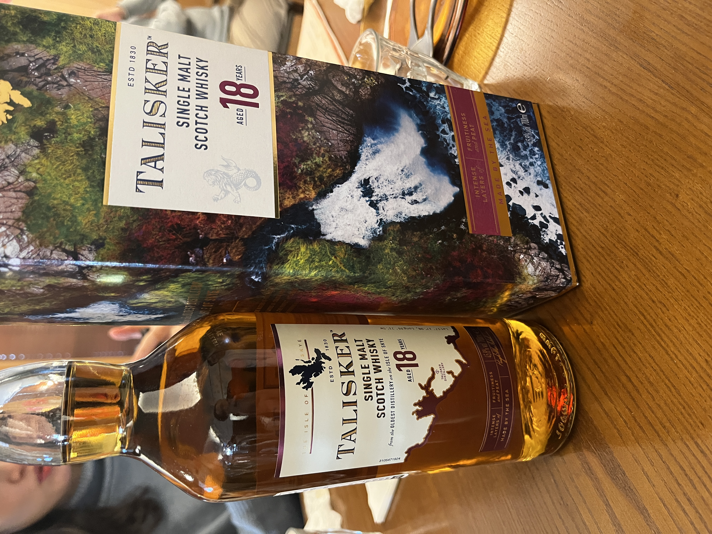
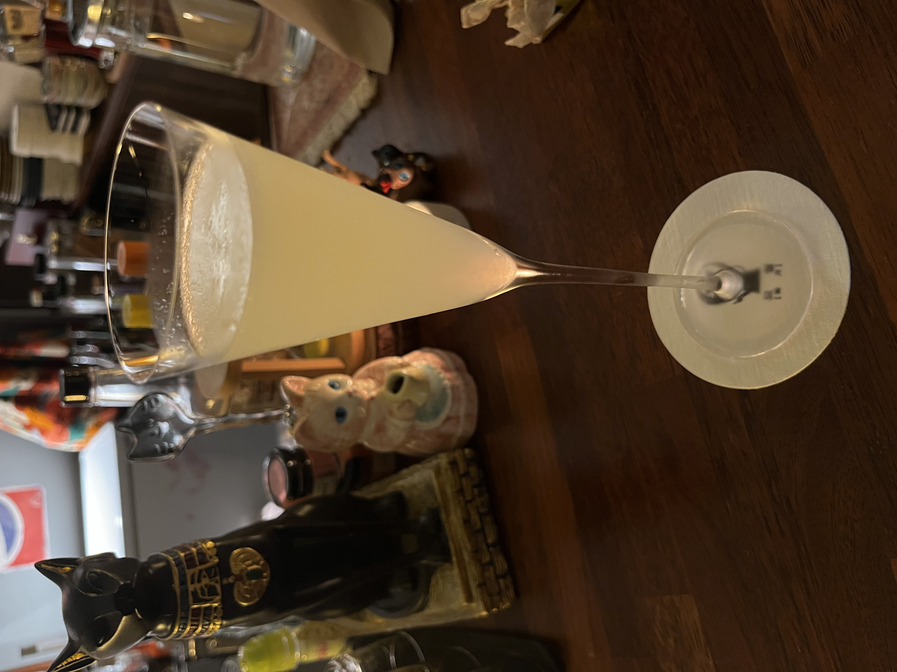
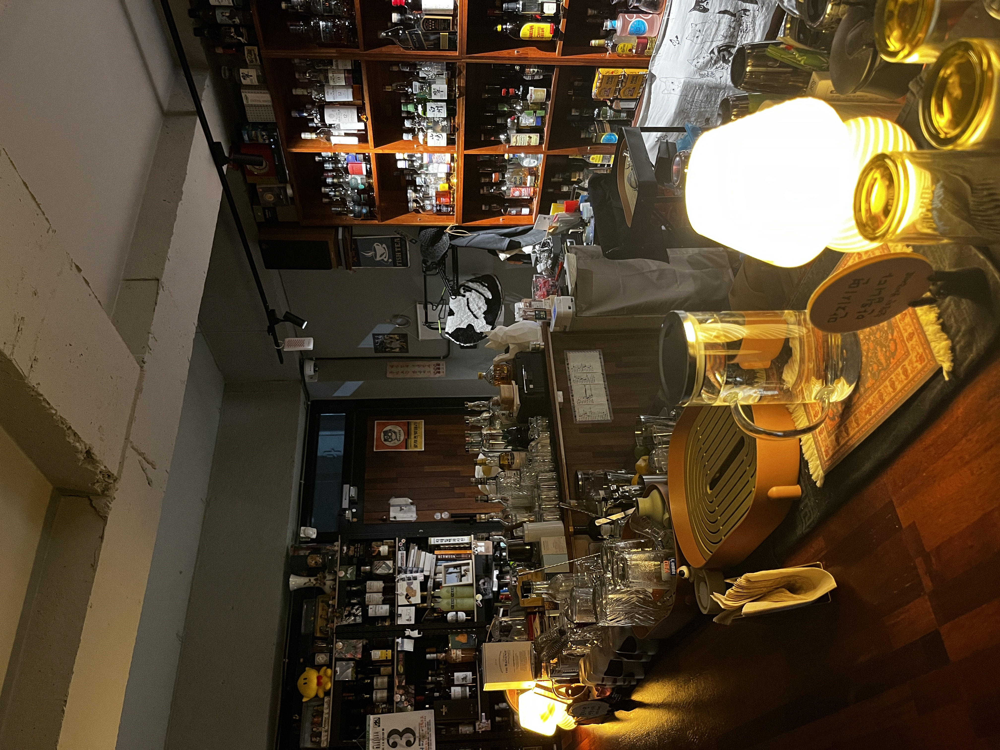

신바람 최박사 - 사랑 결코 시들지 않는
우연찮게 알게 된 노래인데, 가슴이 답답할 때, 울적할 때 부르면서 많이 신세진 노래입니다.

아오! 아오입니다.
안녕하세요, 평범함을 거부하고 싶은 아오입니다.
깃허브 프로필| 이름 | 우정현 |
|---|---|
| MBTI | INTJ(추정) |
| 취미 | 자전거, 등산, 낚시, 검도, 게임 |
| 좋아하는 음식 | 도넛, 마라탕 |
그리운 것들









우연찮게 알게 된 노래인데, 가슴이 답답할 때, 울적할 때 부르면서 많이 신세진 노래입니다.
뮤지컬과 오페라에 본격적으로 눈을 떠주게 한 작품입니다. 처음엔 부르는 것만 즐겼는데 연기까지 하니까 더 재미있었습니다.
오늘 새롭게 배운 것들을 기록합니다.
header, nav, main, section, article, footer 등 시멘틱 태그의 역할과 사용법을 배웠다.